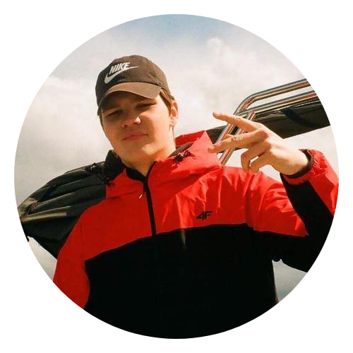
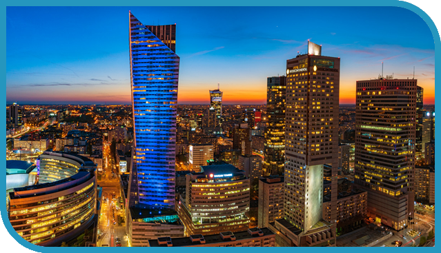
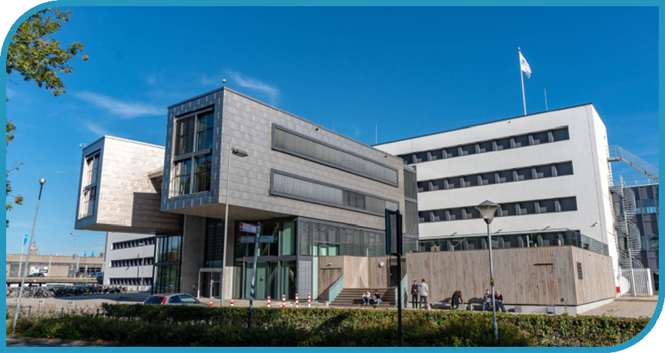
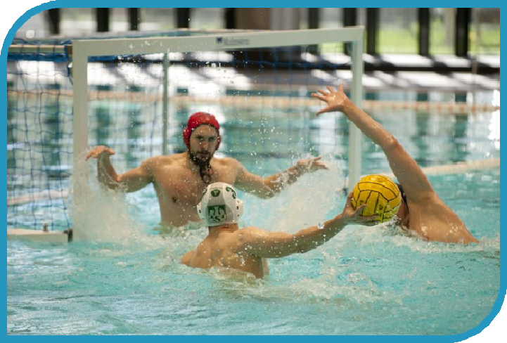
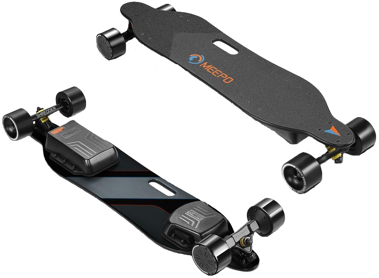
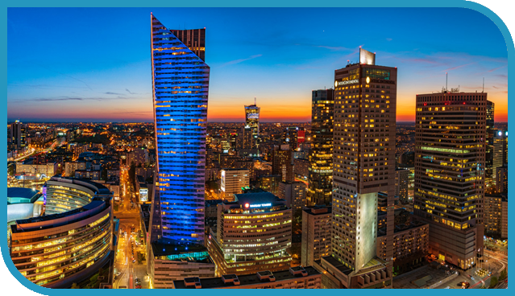
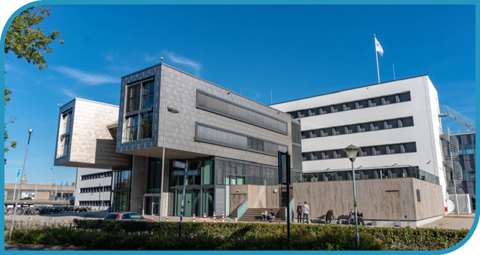
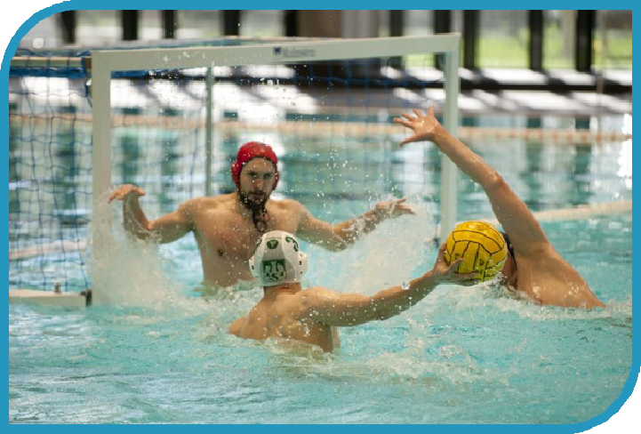
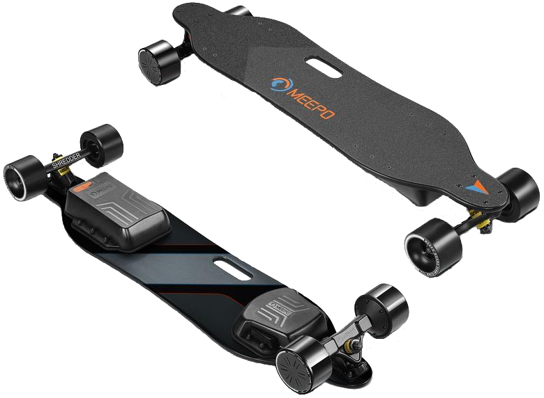

About me...





Hi my name is Wiktor Czuba, I'm currently 19 years old. Up until now I've been living in Warsaw where I was born. After graduating middle-high school I got into high school with math-phisics-IT profile. Despite many road blocks on my education path like pandemic and friends addicted to ethanol, I never gave up and succesfully passed all my crucial exams! All of that leads to me going to this university where new chapter of my life beginns…

Right now im studying at HZ University of applied science in Middelburg. I'm attending ICT courses with which im content. I’m trying my best to please my professors with my work and engagement during lectures. Even tho im in a foreign country, the warm atmosphere at university and lovely class mates made me easly accomodate with this new envoriment.

Since I can remember, I have been training swimming professionally. I went to competitions and achieved good results. From the age of fourteen I trained water polo. A sport in which the whole team has to work together to win. Thanks to this, I have extensive experience with working in a group and I can find myself there.

In my spare time, I like to spend my time actively outdoors. One of my greatest passions is riding an electric longboard. It gives me a lot of joy, I like to rush very much at high speed and feel the wind in my hair.
